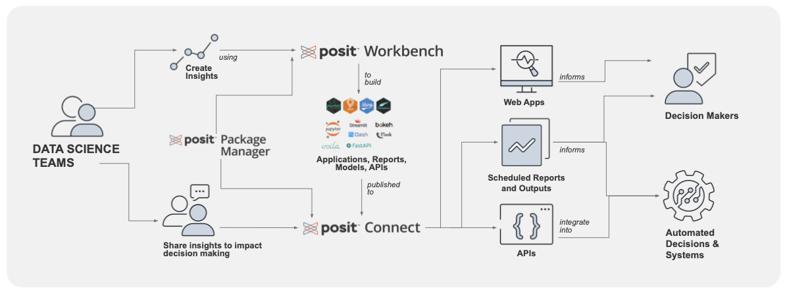

library(tidyverse)
#> ── Attaching core tidyverse packages ───────────────────────────── tidyverse 2.0.0 ──
#> ✔ dplyr 1.1.1 ✔ readr 2.1.4
#> ✔ forcats 1.0.0 ✔ stringr 1.5.0
#> ✔ ggplot2 3.4.2 ✔ tibble 3.2.1
#> ✔ lubridate 1.9.2 ✔ tidyr 1.3.0
#> ✔ purrr 1.0.1
#> ── Conflicts ─────────────────────────────────────────────── tidyverse_conflicts() ──
#> ✖ dplyr::filter() masks stats::filter()
#> ✖ dplyr::lag() masks stats::lag()
#> ℹ Use the conflicted package (<http://conflicted.r-lib.org/>) to force all conflicts to become errorsRStudio Posit Tools for Data Science
Who are we?
Posit (née RStudio) is a public benefit corporation that creates open source and commercial products for data science.
As of this week, we are 381 people. About 50 people work solely on free open-source projects (about 40% - 50% of engineering).
We are mostly remote, across almost every continent. HQ is in Boston.
Posit’s Data Science Menu
We’ll look at tooling for a couple of areas:
- Data handling and manipulation
- Visualization
- Data analysis and modeling
- Reporting
- Potpourri for $500
We’ll mostly stick to R stuff but will accentuate a few python tools. 99% of what I’ll talk about is free.
The IDE (aka “RStudio”)
Data handling and manipulation
Data ingestion
Getting your data in and formatting/manipulating it.
Non-posit:
Posit data ingestion
readr: Read excel files (.xls and .xlsx) into Rvroom: Fast reading of delimited filesgooglesheets4: Google Spreadsheets R APhaven: Read SPSS, Stata and SAS files from Rrvest: Simple web scraping for R
Example code - tidyverse
Not familiar with the tidyverse? Your best resource to learn is R for Data Science.
Reading in csv data
Entries.csv a 30mb file of daily train data:
What’s in that data set?
glimpse(raw_data)
#> Rows: 826,894
#> Columns: 5
#> $ station_id <dbl> 40010, 40020, 40030, 40040, 40050, 40060, 40070, 40080, 40090, …
#> $ stationname <chr> "Austin-Forest Park", "Harlem-Lake", "Pulaski-Lake", "Quincy/We…
#> $ date <chr> "01/01/2001", "01/01/2001", "01/01/2001", "01/01/2001", "01/01/…
#> $ daytype <chr> "U", "U", "U", "U", "U", "U", "U", "U", "U", "U", "U", "U", "U"…
#> $ rides <dbl> 290, 633, 483, 374, 804, 1165, 649, 1116, 411, 1698, 318, 364, …Hmm. Let’s make the dates actual dates:
tidyverse and data manipulations
The code on the last slide accentuates how easy it is to code (and read code) when you need to do several things when using the pipe operator.
raw_data %>%
filter(station_id <= 40030 & date <= ymd("2001-01-06")) %>%
select(-daytype, -station_id, Date = date) %>%
pivot_wider(id_cols = Date, names_from = stationname, values_from = rides)
#> # A tibble: 6 × 4
#> Date `Austin-Forest Park` `Harlem-Lake` `Pulaski-Lake`
#> <date> <dbl> <dbl> <dbl>
#> 1 2001-01-01 290 633 483
#> 2 2001-01-02 1240 2950 1230
#> 3 2001-01-03 1412 3107 1394
#> 4 2001-01-04 1388 3259 1370
#> 5 2001-01-05 1465 3357 1453
#> 6 2001-01-06 613 1569 839Data manipulation
Besides the tidyverse packages, there are a ton of open-source packages for manipulating data
glue: Glue strings to data in R. Small, fast, dependency freeforcats: Tools for working with categorical variablesfs: Provide cross platform file operationsclock: A Date-Time Library for Rsparklyr: R interface to Apache Spark
plus all of the d{*}plyr packages…
Visualization
gg{*} and others
We’ll, there’s ggplot2 and that covers a lot. Some lesser known packages and tools…
ggaminatenon-interactive animations (e.g. gif, mp4) (example)plotlyinteractive plots, can convert ggplots (example)
Not really ggplot:
leafletinteractive maps (example)flexdashboardeasy interactive dashboards for Rr2d3interface to D3 Visualizations (best hex too)
shiny
It is is a popular R package and web application framework that makes it easy to tell data stories in interactive point-and-click web applications.
Two big things that are works-in-progress:
- The visual UI editor
- Shiny for python
Data analysis and modeling
A selection of our modeling tools
There is a lot to talk about here:
- tidymodels
- keras
- torch
- vetiver
tidymodels
… is a framework for statistical and machine learning models using tidyverse syntax.
Basically caret on steroids. Can also access the h2o modeling framework.
If you want more details:
Preparing your data using recipes
The recipes package helps prepare your data prior to modeling.
You can think of it as a better version of model.matrix() crossed with dplyr.
Here’s a hypothetical example:
rec <-
recipe(outcome ~ ., data = data_set) %>%
step_mutate(log_x1 = log10(x1)) %>%
step_rm(x1) %>%
step_other(starts_with("zip"), threshold = 1 / 100) %>%
step_dummy(all_nominal_predictors()) %>%
step_zv(all_predictors()) %>%
step_normalize(all_numeric_predictors()) %>%
step_pca(all_numeric_predictors(), num_comp = 10) # or num_comp = tune()tensorflow/keras
(Mostly just called “tensorflow” now)
These are deep learning libraries in python.
There are a lot of tensorflow-related R packages that access the python machine learning functionality (just like it does for C, java, etc).
- An excellent R package called
reticulateprovides the means to access all of python via R.
To get started, see the tensorflow website and the R version of Chollet’s deep learning book
torch
Another machine learning library.
- Rather than using python as an intermediary, it bundles the C++ files in the R package.
It can be used as an additional computing environment within R.
Some places to get more information:
- the
torchpackage website - Deep Learning and Scientific Computing with R torch book (new!)
bruleeis an R package that has basic model implementations via torch.
Vetiver
vetiver has R and python implementations that enable simple versioning and deployment of models.
Overall documentation is at MLOps with vetiver.

Reporting/Communicating
Quarto!!!!
This is a new publishing system that does all of the things that Rmarkdown does (docs, pages, books, blogs) with a common syntax.
- Quarto is not built within R; it works with R, python, Julia, and Observable.
- Can publish to HTML, PDF, Epub, markdown, Confluence, and so on.
- It encourages interactivity in documents.
- Plenty of examples for documents, websites, books and so on in the gallery
Quarto
If you’ve used knitr and Rmarkdown, you will feel very comfortable with Quarto.
Code chunks have options in-line:
The gt package
People seem to loooove tools for making tables in documents.
The gt package is a nice addition to set of table packages.
| Chicago Train Ridership | |||
| Date | Riders/Day | ||
|---|---|---|---|
| Austin-Forest Park | Harlem-Lake | Pulaski-Lake | |
| 2001-01-01 | 290 | 633 | 483 |
| 2001-01-02 | 1240 | 2950 | 1230 |
| 2001-01-03 | 1412 | 3107 | 1394 |
| 2001-01-04 | 1388 | 3259 | 1370 |
| 2001-01-05 | 1465 | 3357 | 1453 |
| 2001-01-06 | 613 | 1569 | 839 |
Posit Workbench and Connect 💵
Potpourri
webR
This is a good example of how we are often competing with ourselves.
webR is a tool that will compile R into machine-readable code and embed it in a website.
All of the resources are from your local machine. Let’s play!
Good summaries:
Getting more information
You can always contact me (max@posit.co) or Phil Bowsher (phil@posit.co)